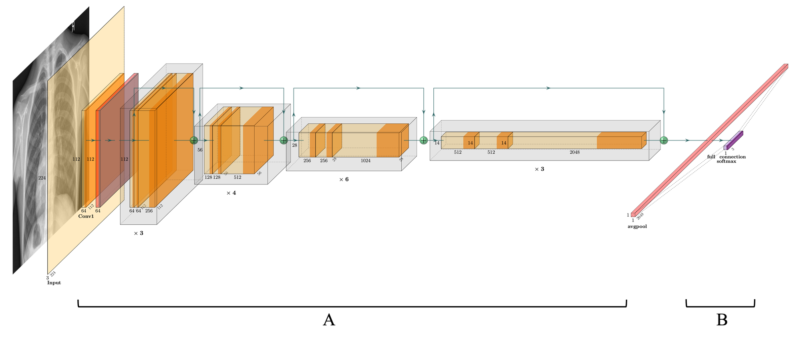
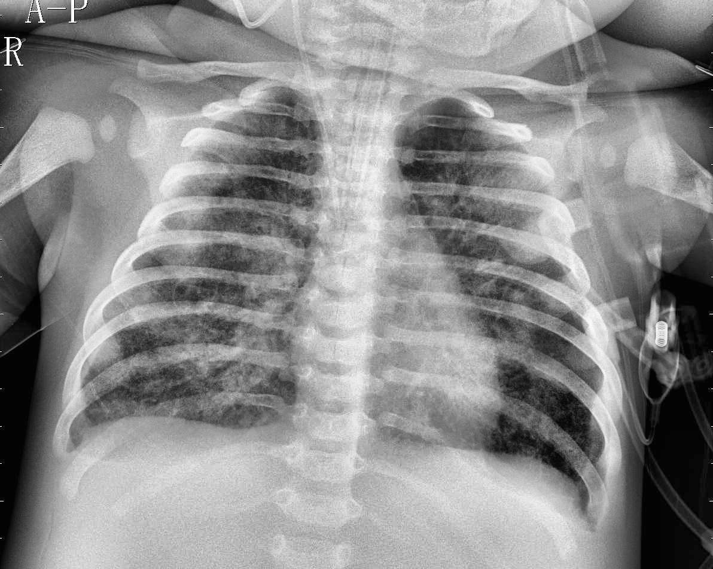

Partial Bayesian Networks for Chest X-Ray Classification

Why
What
- Non-Bayesian: every layer deterministic (blocks A and B in the diagram above).
- Partial-Bayesian: only the final linear classification layer (block B) is Bayesian.
- Fully Bayesian: every convolutional and linear layer is probabilistic; batch normalization and pooling stay deterministic.
ResNet-50Bayesian Neural NetworksVariational InferenceTransfer LearningCLAHEBayesian OptimizationIntegrated GradientsUncertainty Quantification
How
Data
Preprocessing
Models
Training and tuning
Explainability

Results
| Model | Input | Test accuracy | Test F1 | Training time (s) |
|---|---|---|---|---|
| Non-Bayesian | Original | 0.9279 | 0.9442 | 3,294 |
| Non-Bayesian | CLAHE | 0.9375 | 0.9517 | 3,825 |
| Partial-Bayesian | Original | 0.9473 | 0.9588 | 3,783 |
| Partial-Bayesian | CLAHE | 0.9314 | 0.9470 | 4,125 |
| Fully Bayesian | Original | 0.7000 | 0.7563 | 5,038 |
| Fully Bayesian | CLAHE | 0.7101 | 0.7842 | 5,089 |
624 held-out test images. Best values in bold.
- A Bayesian output layer was enough. The partial-Bayesian model scored highest on both accuracy and F1, ahead of the deterministic baseline, and trained only about 15% slower.
- Full Bayesianization hurt. With 23M+ parameters turned into distributions and the same 50-epoch budget, the fully Bayesian model stayed near 70% accuracy. Its Monte Carlo predictions were still consistent, and narrower when correct, which points to slow convergence rather than a useless model.
- Uncertainty came for free. On a normal X-ray, 1,000 forward passes of the partial-Bayesian model gave a mean normal-class probability of 93.6% (SD 4.2) with a 90% interval of [85.8%, 95.3%]: a prediction with its own error bars.
- CLAHE helped the deterministic model, not the Bayesian one. Contrast enhancement lifted the non-Bayesian model but slightly lowered partial-Bayesian accuracy. It did, however, shrink the partial model’s prediction variance, a trade-off between raw accuracy and stable predictions.
- The strong models looked at the lungs. Integrated Gradients maps for the best configurations concentrated on consolidated lung regions; the fully Bayesian model failed to localize them.
Limitations and next steps
- One task and one dataset. Whether partial-Bayesian gains carry over to other modalities and diseases is still open.
- A fixed epoch budget may have under-trained the fully Bayesian model; longer or adaptive schedules are the obvious next test.
- Uncertainty was judged from predictive distributions and intervals. Formal calibration metrics, such as expected calibration error and coverage, would make the reliability case stronger.
- Bayesian layers placed earlier or mid-network, and cheaper variational approximations, are natural extensions.